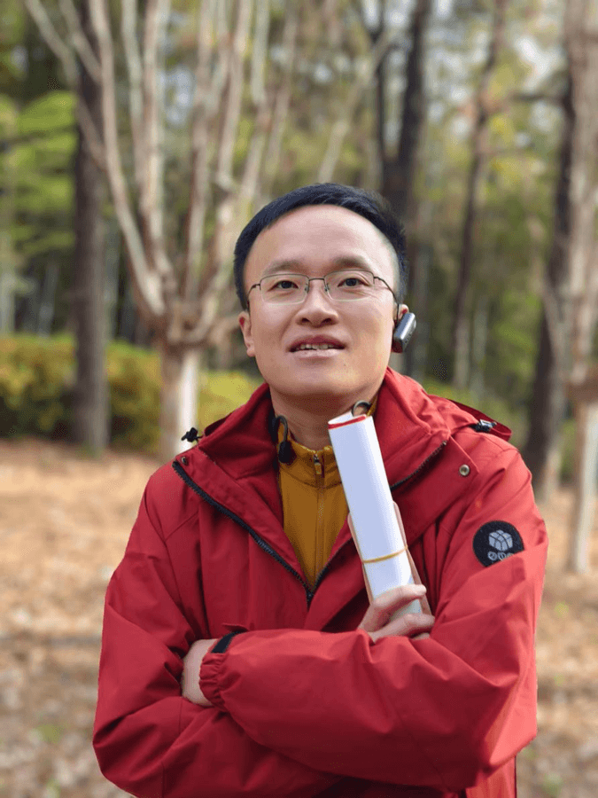

杨国茂
Yang Guomao
九经书院学员，在儒释道经典的研习中体悟人生、觉察自我，以经典智慧安顿身心。
在我看来，九经书院并不是一个简单讲授经典的培训课程，而是一套帮助我们重新理解人生、觉察自己、安顿身心的学习体系，更像是一所真正的「人生学院」。
跟随胡勇院长学习儒、释、道经典的过程中，我不仅感受到东方哲学的深邃与魅力，也有幸见识了一位博学、通达而又仁爱的老师。胡勇院长讲经典，不是停留在知识和文字层面，而是将经典与人生、家庭和事业相连接，让古老的智慧真正回到现实生活之中。
更打动我的，是在胡勇院长身上看到了一种明达、从容而有温度的生命状态。经典不再只是书本里的道理，而成为一个人真实的精神气象。
希望自己能够在持续学习中，少一些浅薄与浮躁，多一些清醒与清净；也希望这些古老而恒新的智慧，能够让我更好地认识自己、善待家人、面对事业，成为一个更加明白、从容而有益于他人的人。
—— 杨国茂